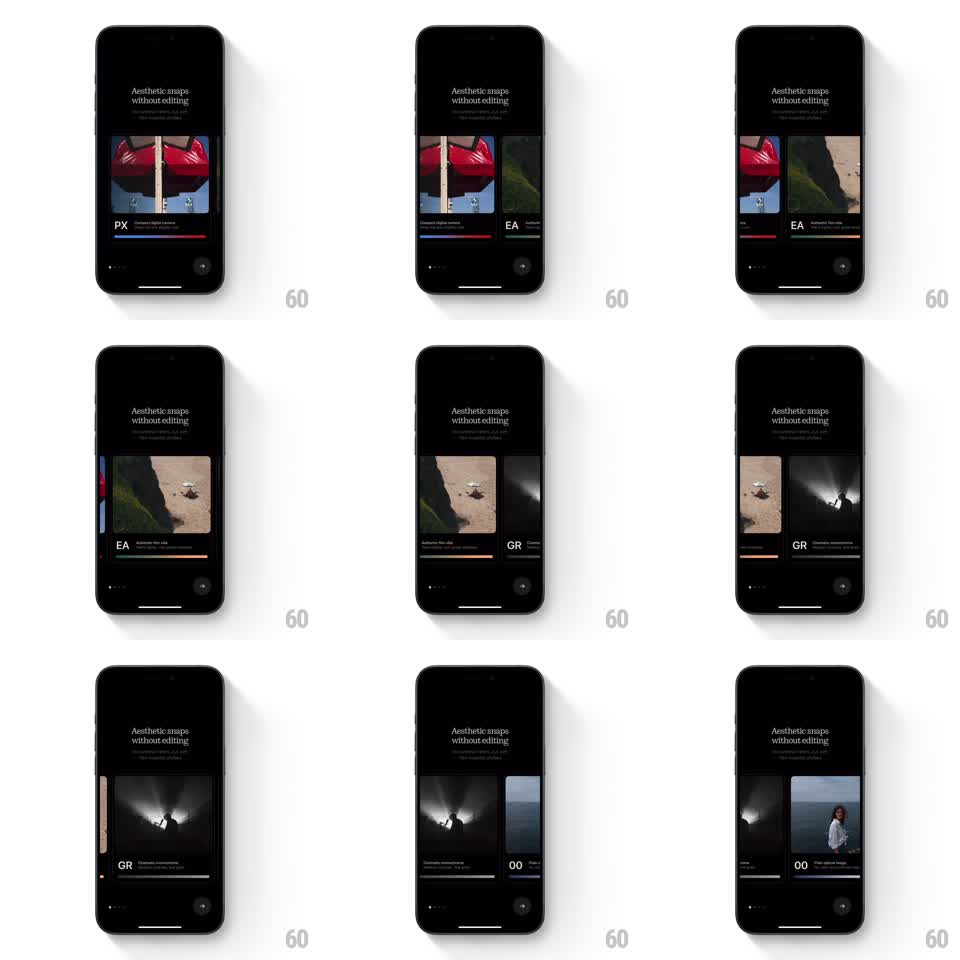

Media
Frame-by-frame

Rebuild this animation 1:1: Lampa's film profile carousel - swiping slides tall photo cards across the screen with springy snapping, the next profile peeking in from the edge.

Rebuild this animation 1:1: Lampa's film profile carousel - swiping slides tall photo cards across the screen with springy snapping, the next profile peeking in from the edge. ## Integration Integration: stack-agnostic spec - springs given as stiffness/damping, timed motions as duration + curve; map every value to your framework and animation library of choice. ## Scene Black onboarding screen: "Aesthetic snaps without editing" headline, then a carousel of tall photo cards, each with a two-letter profile code (PX, EA, GR, 00) and a colored underline plus a line of description. The dot pager and arrow button sit at the bottom. ## Motion spec Pattern: peeking carousel with spring snap, ~500ms per page. - Cards sit in a horizontal strip: the active card centered and full-height, the next card peeking ~15% in from the right edge, the previous card's sliver on the left. - Dragging moves the strip 1:1 with the finger; cards keep their spacing rigidly. - Release: the strip snaps to the nearest card (spring stiffness 280 damping 24), the incoming card settling centered with a soft overshoot. - As a card becomes active its profile code and description fade in (250ms) and its colored underline draws (250ms, left to right); the outgoing card's chrome fades out. - The dot pager advances on the snap, the active dot stretching (width x2, 200ms). ## Calibration - The snap's overshoot is small and single - the card should feel magnetic, not bouncy. - The peeking edges are constant width; the strip never collapses the gaps. ## Reduced motion Cards crossfade between profiles. ## Don't miss - Each profile has its own underline color - the color is part of the identity, carried per card. - The headline and pager are fixed; only the card strip and its per-card chrome animate.